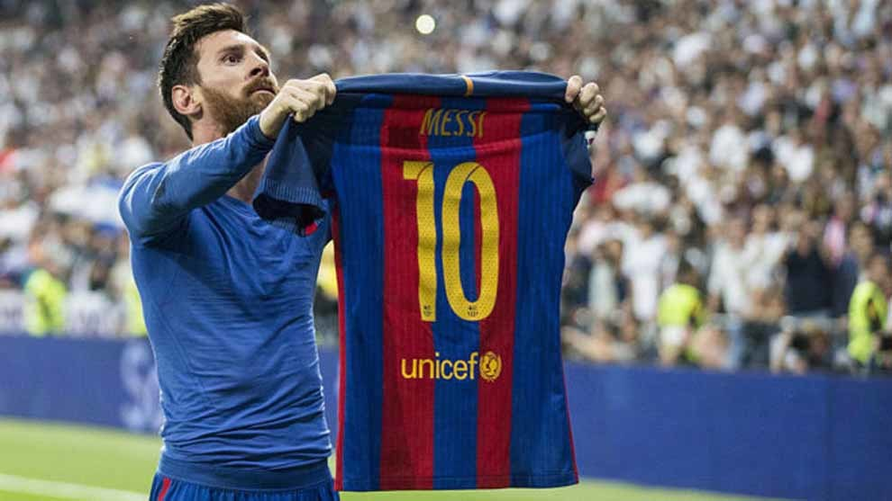

Lionel Andrés Messi
Fecha y lugar de nacimiento: Rosario, Santa Fe; 24 de junio de 1987
Ocupacion: futbolista argentino que juega como delantero o centrocampista en el Paris Saint-Germain de la Ligue 1 de Francia.
Dato importante: es considerado con frecuencia el mejor jugador del mundo y uno de los mejores de todos los tiempos

Cantante favorito